Картография с основами топографии
Лекция 1. Системы координат
Общая информация по курсу
- Лекции раз в две недели (ГЗ 02)
- Практические занятия каждую неделю (см. расписание)
- Кабинет топографии (1913)
- Электронная ведомость: → → → → → → →
- Промежуточная аттестация — практические работы + устный зачёт
- Консультации по самостоятельному заданию в QGIS: с марта (1919)
Литература
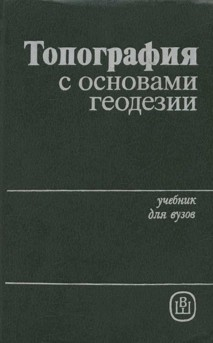  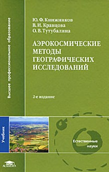 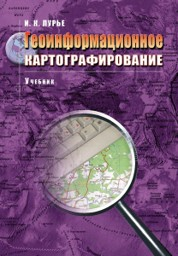
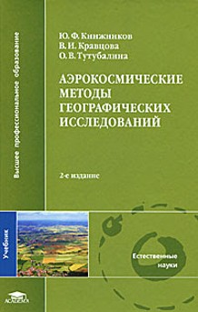 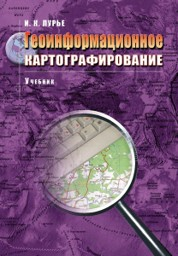
- Топография с основами геодезии: учебник для студ. географ. спец. ун-тов / А. П. Божок и др.; под ред. А. С. Харченко и А. П. Божок. — М.: Высш. шк., 1986. — 304 с.
- Курошев Г. Д. Топография: учебник для студ. учреждений высш. проф. образования. — М.: Академия, 2011. — 192 с.
- Берлянт А. М. Картография: учебник для вузов. — 2-е изд., испр. и доп. — М.: КДУ, 2011. — 464 с.
- Аэрокосмические методы географических исследований / Ю. Ф. Книжников и др. — 2-е изд. — М.: Академия, 2011. — 416 с.
- Лурье И. К. Геоинформационное картографирование. — М.: КДУ, 2010. — 424 с.
Общие понятия. Системы координат в картографии
Предметная область
- Геодезия – наука о методах определения фигуры и размеров Земли и изображении её поверхности на картах, а также о разработке способов, приёмов и средств геодезических измерений на земной поверхности
- Топография – научно-техническая дисциплина, занимающаяся географическим и геометрическим изучением местности путём создания топографических карт на основе съёмочных работ
- Картография – наука о картах как об особом способе изображения действительности, об их создании и использовании
- Геоинформатика – научно-техническое направление, объединяющее теорию цифрового моделирования предметной области с использованием пространственных данных, технологии создания и использования геоинформационных систем, производство геоинформационной продукции и оказанием геоинформационных услуг
Форма Земли
В большинстве случаев Земля аппроксимируется
формой эллипсоида вращения (сфероид)
- a, b — большая и малая полуось
- \[\alpha = \frac{a - b}{a}\] — полярное сжатие
Существует два типа эллипсоидов:
- Общеземные
- Референц-эллипсоиды
Важнейшие земные эллипсоиды
| Деламбр |
1800 |
6 375 653 |
1/334 |
| Вальбек |
1819 |
6 376 896 |
1/303 |
| Бессель |
1841 |
6 377 397 |
1/299 |
| Кларк |
1866 |
6 378 206 |
1/295 |
| Хейфорд |
1909 |
6 378 388 |
1/297 |
| Красовский |
1940 |
6 378 245 |
1/298,3 |
| GRS-67 |
1967 |
6 378 160 |
1/298 |
| GRS-80 |
1979 |
6 378 137 |
1/298 |
| a |
6 378 137 |
6 378 136 |
6 378 245 |
6 378 136,5 |
| b |
6 356 752,314 |
6 356 751,362 |
6 356 863,019 |
6 356 751,758 |
| α |
1/298,257 2235 |
1/298,257 84 |
1/298,3 |
1/298,256 4151 |
Системы координат, используемые в картографии
- Геодезические (географические)
- Высотные
- Плоские прямоугольные
- Пространственные прямоугольные
- Полярные
Геодезическая (географическая) система координат
- Датум (геодезический датум , исходные даты) – набор параметров, описывающих положение эллипсоида внутри тела Земли
- Во многих случаях датум – это синоним геодезической системы координат
- Разные датумы могут использовать одни и те же эллипсоиды
- Параметры датума:
- Сдвиг центра эллипсоида относительно центра масс Земли
- Ориентация и поворот осей
- Масштаб эллипсоида
- Временная эпоха
Геодезические (географические) координаты
- Широта \(\varphi\) — угол между плоскостью экватора и отвесной линией, проведённой в точке на поверхности Земли
- Долгота \(\lambda\) — двугранный угол между плоскостью меридиана, проходящего через данную точку, и плоскостью нулевого меридиана
Системы счёта высот

Высоты — расстояния от поверхности Земли до определённой поверхности отсчёта, измеренные по отвесной линии
- Геодезические высоты — от эллипсоида
- Ортометрические высоты — от геоида
- Нормальные высоты — от квазигеоида
Геоид
Геоид — эквипотенциальная (уровенная) поверхность, совпадающая со средней поверхностью морей и океанов, не возмущённых приливами и отливами, ветрами и изменениями атмосферного давления, и продолженная под материками всюду нормально отвесным линиям [Листинг, 1873]
Квазигеоид
- Квазигеоид – геометрическое место точек, получаемых путём откладывания нормальных высот по силовым линиям нормального поля силы тяжести от точек физической поверхности Земли [Молоденский , 1950; Серапинас , 2008]
- Возмущающий потенциал силы тяжести
Плоская прямоугольная система координат
Картографическая проекция — математически определённое правило перехода от объёмной
модели Земли к плоскости ≈ плоская прямоугольная система координат
\[x = f_1(\varphi, \lambda), \; y = f_2(\varphi, \lambda)\]
Группы проекций по виду вспомогательной фигуры:
- Конические
- Цилиндрические
- Азимутальные
Виды проекций по характеру искажений
Искажаемые параметры:
Виды проекций:
- Равноугольные
- Равновеликие
- Произвольные, в т. ч. равнопромежуточные
Индикатриса Тиссо (эллипс искажений)
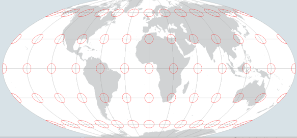

Конические проекции
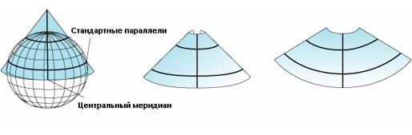

Азимутальные проекции
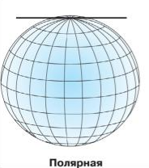
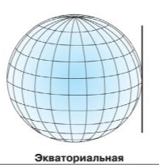

Карты в азимутальных проекциях
Цилиндрические проекции

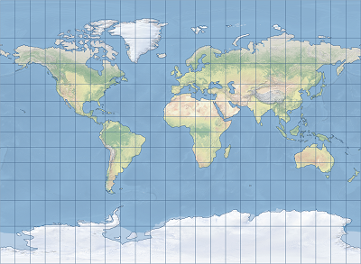
Проекция Миллера

Проекция Меркатора
Поперечно-цилиндрические проекции
Проекции Гаусса–Крюгера и UTM
Зональные поперечно-цилиндрические равноугольные проекции

Universal Transverse Mercator (UTM)
Счёт зон от 180-го меридиана на восток
Плоская прямоугольная СК задаётся отдельно для каждой зоны проекции!
Прямоугольные координаты на топографической карте
6283 – расстояние в километрах от экватора
7409 – номер зоны и расстояние в километрах от осевого меридиана, сдвинутого на 500 км к западу
6291, 6776 – то же самое, но для СК соседней зоны
Другие виды проекций
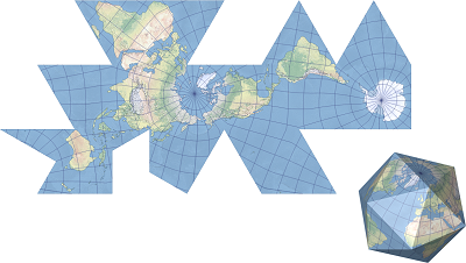 Проекция Фуллера
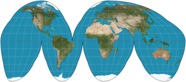 Проекция Гуда
Полярные координаты
- Направление (угол) α
- Расстояние L
В качестве направления могут быть взяты:
- Дирекционный угол
- Истинный азимут
- Магнитный азимут
- Условный горизонтальный угол
Углы отсчитываются по часовой стрелке
Сближение меридианов
Гауссово сближение меридианов — угол между меридианом точки и осевым меридианом проекции
Магнитное склонение — угол между истинным и магнитным меридианами
Сюрприз № 1